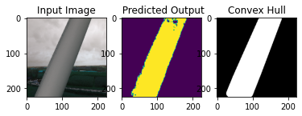
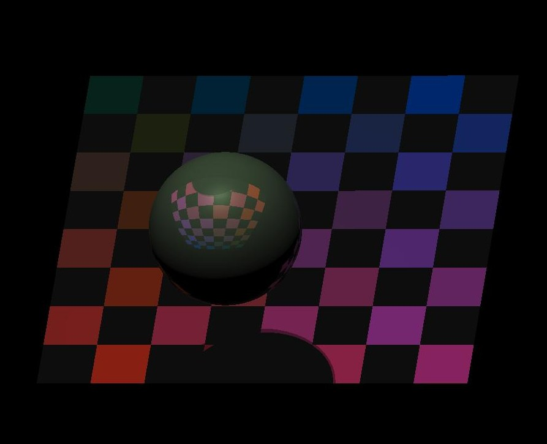
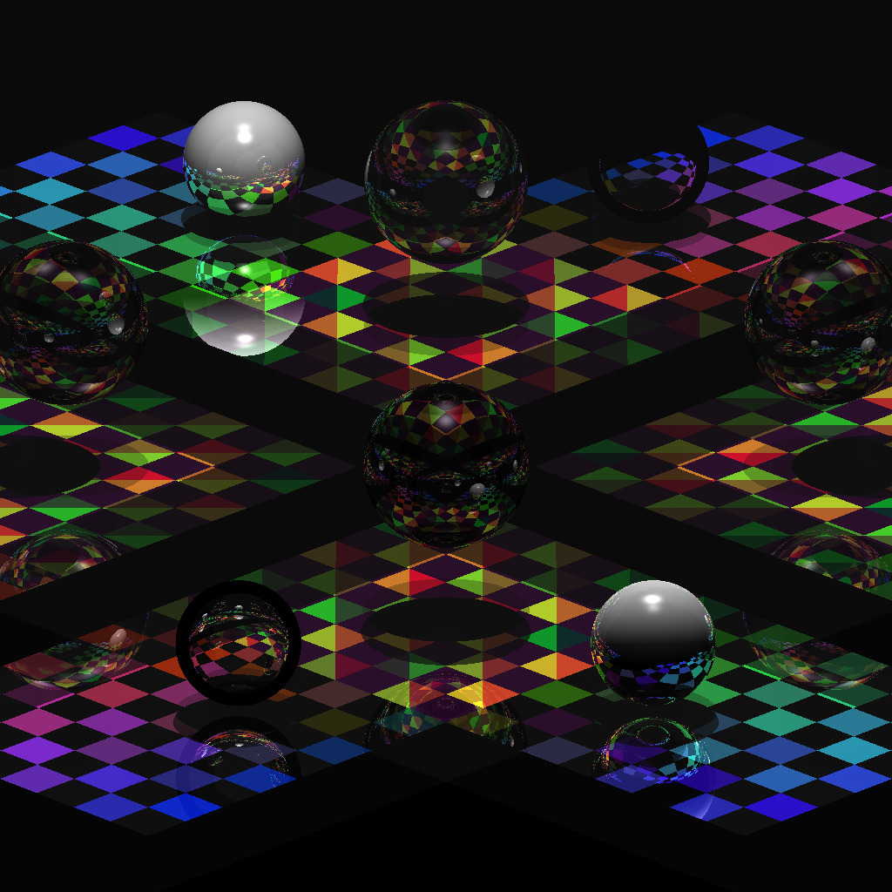
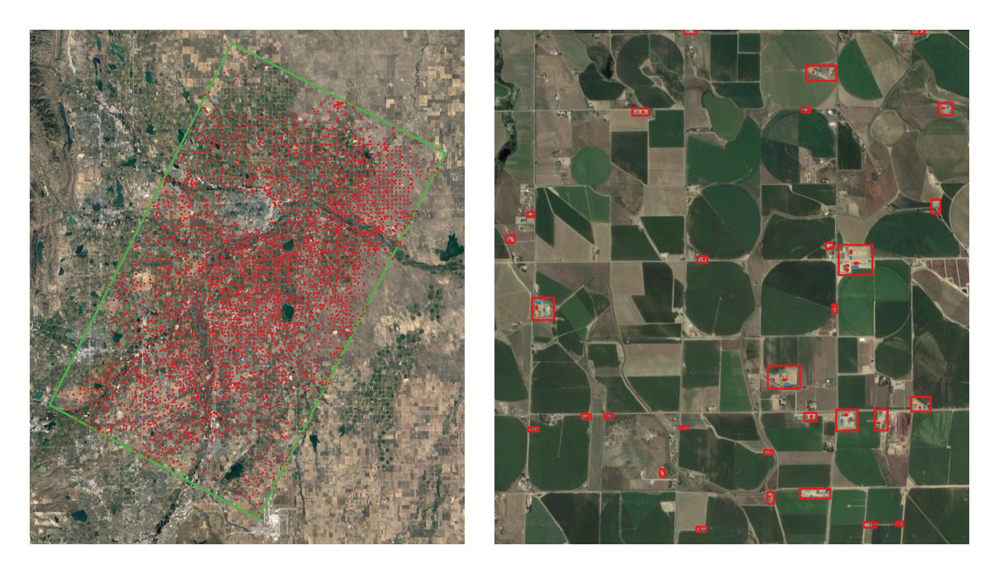
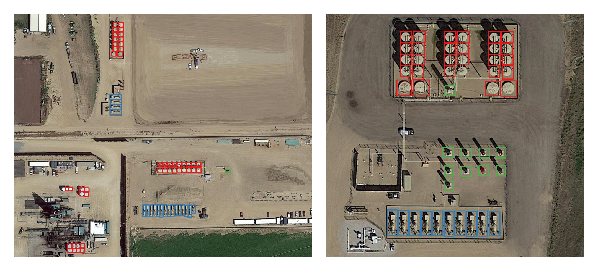
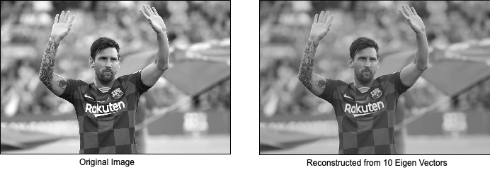
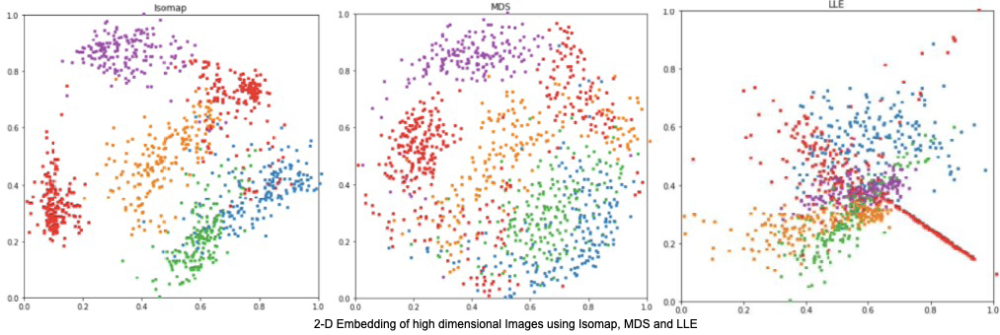

- Face Authentication using Siamese Networks - Siamese Networks are one of the most popular one-shot learning algorithms. This project shows how to implement one-shot learning methods for Face authentication.
Tools :- Python, Keras, TensorFlow, OpenCV - Wind Turbine blade Segmentation - An encoder-decoder architecture based on pretrained MobileNetV2 for segmenting wind blades.
Tools :- Python, Keras, TensorFlow, OpenCV - Spatial Analysis of COVID-19 Impact using Deep Learning - In this work three deep learning models – Stacked LSTM, Bidirectional LSTM, and Multivariate CNN are used for spatial analysis of covid spread using distributed computing. The goal is to process the massive amount of covid data to predict the covid cases for next few days.
Tools :- Python, Keras, Distributed-TensorFlow - Detecting the Most Popular Topics from Live Twitter Message Streams - A program to detect the most popular topics from live twitter message streams using lossy counting algorithm with Apache Storm and Apache Zookeeper.
Tools :- Java, Apache Storm, Apache Zookeeper - Image Rendering using Ray Tracing - A raytracer program which could render photo-realistic images of 3D models using Perspective Projection and Camera modeling.
Tools :- C++, Eigen - 3-D Object Detection Using Pointnet - Pointnet is the first model to train and detect 3-D point clouds directly without transforming the data to 3D Voxels or to other 2-D representations.The original Pointnet work is done using tensorflow1.x and few other packages which are deprecated in newer versions. So, this is my implementation of pointnet using tensorflow 2.0 and python 3.7.
Tools :- Python, TensorFlow - Explorative Analytics of an Evolving Citation Network - A program to measure fundamental network properties with a citation network and investigate how they evolve using Apache Storm and Hadoop. Tools :- Scala, Apache Spark, Apache Hadoop
- Satellite Image Annotation Plugin - This is a plugin developed to annotate satellite images. The plugin runs inside an open source software-QGIS. Satellite images from different sources like Google, Bing, ESRI can be used. The plugin create images and annotation files to train Yolo(v2,v3 and v4) but can also be extended for other deep learning architectures.
Tools :- Python, PyQt - Well Site Identification from Satellite imagery - This is a deep learning detection model based on YOLOv4 to find well sites in DJ Basin, Colorado. This works was part of the methane emission studies in Colorado. Trained a YOLOv4 model with 1500 well pad images and 500 site equipment images. The entire pipeline is implemented in QGIS. Model acheived an average well pad detection accuracy of 97% in DJ Basin, Colorado. (*Code not yet open-sourced )
Tools :- Python, YOLOv4, OpenCV - KL Transform for Image Compression - A python implementation of Karhunen-Loeve (KL) mapping technique for image/data compression. KL is an optimal dimensionality reduction mapping technique and is based on finding the best orthonormal basis. The goal of this technique is to find the subspace where most of the information lies.
Tools :- Python, OpenCV - Manifold Learning Based Image Classification - Project focuses on analyzing and studying three different manifold learning techniques - Multidimensional Scaling (MDS), Isomap, Locally Linear Embedding(LLE) for image classification.
Tools :- Python, OpenCV - Wildlife Animal Classification using VGG16 - A VGG-16 architecture for wildlife animal classification through transfer learning.
Tools :- Python, Keras, TensorFlow, OpenCV, VGG16 - Binary Mask to JSON - This python code helps to create a JSON file from Binary Mask Image for training a MASK-RCNN Segmentation Model.
Tools :- Python, Numpy






